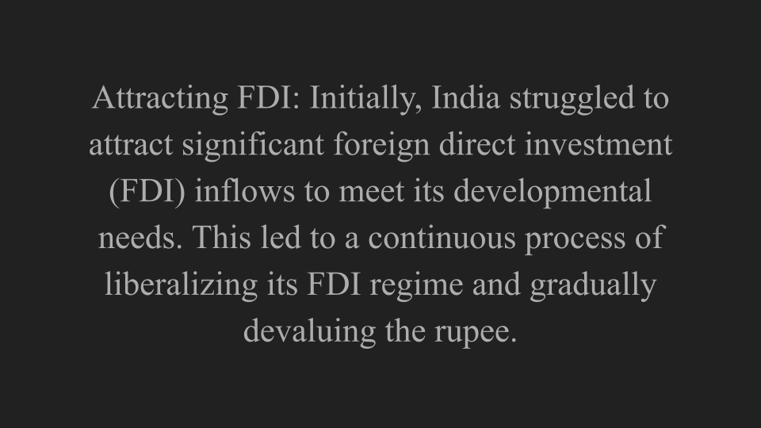

Globalization refers to the spread of the flow of financial products, goods, technology, information, and jobs across national borders and cultures. In economic terms, it describes an interdependence of nations around the globe fostered through free trade.
Globalization is a social, cultural, political, and legal phenomenon.
Socially, it leads to greater interaction among various populations. Culturally, globalization represents the exchange of ideas, values, and artistic expression among cultures. Globalization also represents a trend toward the development of a single world culture. Politically, globalization has shifted attention to intergovernmental organizations like the United Nations (UN) and the World Trade Organization (WTO). Legally, globalization has altered how international law is created and enforced.

After 2003, the cumulative impact of years of reform and globalization helped Indian GDP to average more than 7 percent annually, making India a “miracle” economy. India leapfrogged richer developing countries to become a services exporter.
India's GDP Fluctuation Over the Years (1990-Present)
Prospects and Developments in India's Consumer Durables Market
The Indian consumer durables market is broadly segregated into urban and rural markets and is attracting marketers from across the world. The sector comprises of a huge middle class, relatively large affluent class and a small economically disadvantaged class. The sector includes consumer electricals such as fans, kitchen and cooking appliances, lighting devices, as well as white goods
such as washing machines, televisions, refrigerators, and air conditioners.
Income inequalities in India
The World Inequality report 2022, which tracks global trends in inequality, marks this dichotomy. India is one of the most unequal countries in the world, with rising poverty and yet an affluent elite, the report states.
It's almost as if there are two countries in India: a very small, very rich country (the country of prosperous Indian urban centers) and a very large, poor country, says Lucas Chancel, lead author of the report and co-director of the World Inequality Lab. "For a long time, it has been said that the richer the rich part of the country, the better for the rest," he says.
Distribution of wealth in India
Agriculture, once India’s main source of revenue and income, has since fallen to approximately 18.32% of the country’s GDP, as of 2020. The workforce distribution is the highest in the agricultural sector which is generating the lowest income among all the sectors. This is likely to be one of the primary factors contributing to the unequal distribution of wealth and the widening gap between the rich and the poor. While india has the third largest gdp in the world and has seen a lot of economic growth over the past years, this growth has not been inclusive or equitable.
Like is the case with any other country, Globalization had both positive and negative impacts within India. While it propelled India to prosperity and improved the quality of life, it has also increased income and wealth inequalities, corruption(Lower costs do benefit many consumers, but it also creates tough competition that leads some companies to search for cheap labor sources. Some Western companies ship their production overseas to countries like China and Malaysia, where lax regulations make it easier to exploit workers.), loss of jobs and disproportionate growth both between and within nations. Globalization detractors argue that it has created a concentration of wealth and power in the hands of a small corporate elite that can gobble up smaller competitors around the globe.
Change in trade and FDI policy in India has coincided with a significant change in wage inequality within the Indian manufacturing sector. An analysis of real wages in Indian manufacturing shows that the real wage rate of skilled (managerial and supervisors Staff) and unskilled workers (production workers) grew hand in hand during the 1980s. In fact, the real wage of unskilled workers grew slightly at a higher rate as compared to the growth in real wage of skilled workers. Consequently, the wage inequality in Indian manufacturing witnessed a marginal decline during the decade of 1980s . Similar trend was observed among most of the industries at 3-digit level of NIC.3 An analysis of wage inequality by type of industries shows that all export-oriented industries put together 4 witnessed a decline of 4.04 per cent in wage inequality, while it came down by 3.67 per cent in other industries during the 1980s. However, the biggest decline in wage inequality was observed in import competing industries where it declined by 8.33 per cent. Average Annual Growth Rate of Real Wage Rate of
Skilled and Unskilled Workers:
The real wage of skilled and unskilled workers witnessed a
completely opposite trend after the implementation of radical economic
reform of 1990s, especially after 1996-97. The average real wage of
unskilled workers maintained an upward trend till mid-1990s. However,
the trend reversed as the real wage of unskilled workers started stagnating
from 1995-96 onward. From 1996-97 to 2010-11, the real wage rate of
unskilled workers witnessed a negative growth while the real wage of
skilled workers, during same period, witnessed an impressive growth
leading to around 81 percent increase in wage disparity between skilled
and unskilled workers.
Conclusion
India is one of the countries that succeeded significantly after the initiation and implementation of globalisation. The growth of foreign investment in the field of corporate, retail, and the scientific sector has been enormous in the country. It lead to increase in employment, increase in compensation, higher standard of living, given us greater access to global markets and advanced technology.
Globalization has enabled occupation mobility in India through the "high-tech revolution" and the employment it has driven. This has helped people from lower socioeconomic classes enter higher social strata by enhancing their skills and income through education and training. However, this social mobility has also resulted in an intensification of inequality. The rapid globalization and financial development witnessed in the past two decades have widened the income gap.
While on the one hand, following the twin forces of globalization and financial development, India emerged as one of the fastest-growing economies in the world that have prompted researchers and policymakers to use epitaphs like ‘amazing India’ and ‘shining India.’ On the other hand, few observers (Anand & Thampi, 2016; Chancel & Piketty, 2019) have raised concerns about mounting inequalities in the distribution of income and wealth over the same period, with the Oxfam (2017) report placing India as the second most unequal economy in the world.
It is about time policy makers designed alternative policies to counter extreme poverty and inequality; curbing these, even within one country, requires global, cross-country policies that we do not currently have; it also requires setting up of an international initiative to coordinate such policies.
Distribution of gross domestic product (GDP) across economic
sectors from 2012-2022
Distribution of the workforce across economic
sectors from 2011-2021